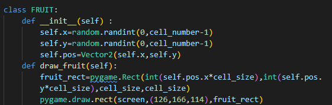

First Task: Setting up the board
Setting up the board
- Let's create a variable named cell_size equals to 40, then a variable named cell_number equals to 20 to make sure out screen's width and height equals to cell_number*cell_size. Fill the screen with a background color of RGB(175, 215, 70), set up the FPS to 60, and name it "game".
- Next let creat GameObjects. There will be a slight difference here. Instead of declaring variables like "player_img" and "player_rect", we will use a class, constructor, and functions to make our code cleaner.
- For example, here's the code snippet for declaring a class for the fruit: 
Don't worry so much for new syntax coding, I will help you step by step:
- Create a constructor function with the parameter "self", and then create an x and y position for the fruit. Ex: self.x=5 ...
- Draw a square representing the fruit.
- Learn about Vector 2D in Pygame
- Create a function named draw_fruit to represent fruit
- Make the fruit appears randomly by using randint.